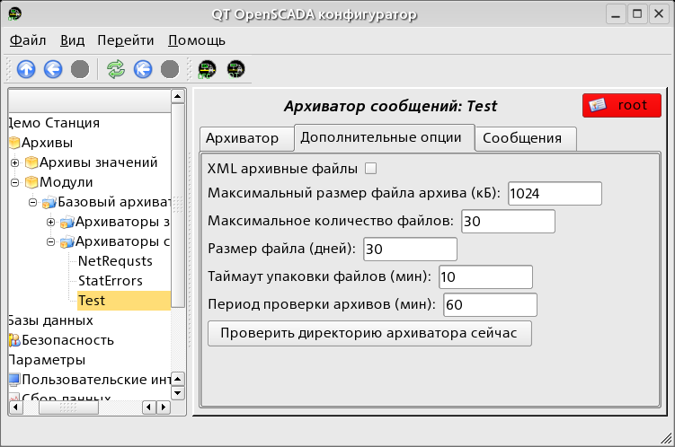
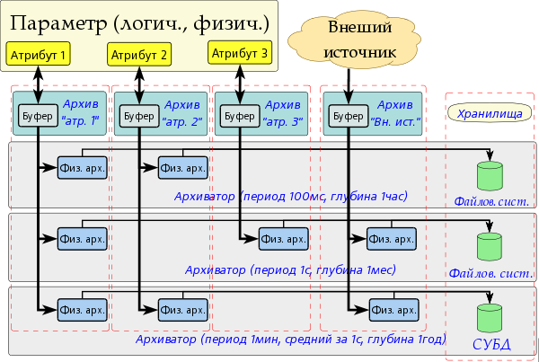
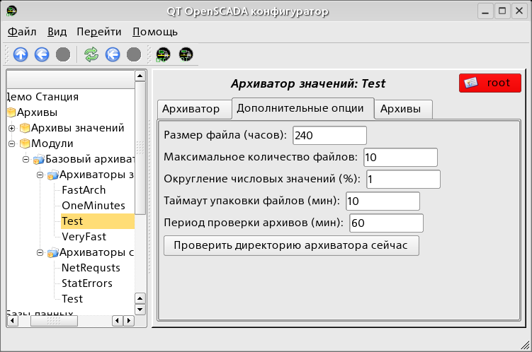
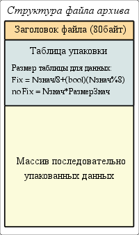
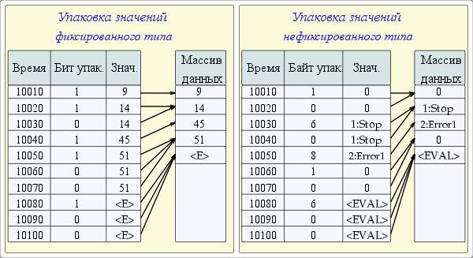

Модуль архива. Предоставляет базовые функции архивирования сообщений и значений на файловую систему.
Лицензия:
GPL
Введение
Модуль предназначен для архивирования сообщений и значений системы OpenSCADA на файловую систему.
Любая SCADA система предоставляет возможность архивирования собранных
данных, т.е. формирование истории изменения (динамики) процессов.
Архивы, условно, можно разделить на два типа: архивы сообщений
и архивы значений.
Особенностью архивов сообщений является то, что архивируются,
так называемые, события. Характерным признаком события является
его время возникновения. Архивы сообщений, обычно, используются
для архивирования сообщений в системе, т.е. ведение логов
и протоколов. В зависимости от источника, сообщения
могут классифицироваться по различным критериям. Например,
это могут быть протоколы аварийных ситуаций, протоколы действий
операторов, протоколы сбоев связи и др.
Особенностью архивов значений является их периодичность
определяемая промежутком времени между двумя смежными значениями.
Архивы значений применяются для архивирования истории непрерывных
процессов. Поскольку процесс непрерывный, то и архивировать
его можно только путём введения понятия квантования времени
опроса, поскольку иначе мы получаем архивы бесконечных размеров
ввиду непрерывности самой природы процесса. Кроме этого, практически,
мы можем получать значения с периодом ограниченным самими
источниками данных. Например, довольно качественными источниками
данных, в промышленности, редко позволяют получать данные
с частотой более 1кГц. И это без учёта самих датчиков
имеющих ещё менее качественные характеристики.
Для ведения архивов, в системе OpenSCADA, предусмотрена
подсистема «Архивы». Данная подсистема, в соответствии
с типами архивов, состоит из двух частей: архив сообщений
и архивы значений. Подсистема, в целом, является модульной,
что позволяет создавать архивы основанные на различной
природе и способах хранения данных. Данный модуль предоставляет
механизм архивирования на файловую систему как для потока
сообщений так и для потока значений.
1 Архиватор сообщений
Архивы сообщений формируются архиваторами. Архиваторов может быть
множество, с индивидуальными настройками позволяющими разделять
архивирование различных классов сообщений.
Архиватор сообщений модуля позволяет хранить данный
как в файлах в формате языка XML, так и в
формате плоского текста. Язык разметки XML является стандартным
форматом, который с лёгкостью понимают многие сторонние
приложения. Однако, открытие и разбор файлов в таком формате
требует значительных ресурсов. С другой стороны, формат плоского
текста требует значительно меньше ресурсов, хотя и не является
унифицированным, требует знания его структуры для разбора.
В любом случае, поддерживаются оба формата,
и пользователь может выбрать любой из них в соответствии
со своими требованиями.
Файлы архивов именуются архиваторами исходя из даты первого сообщения в архиве. Например так: <2006–06–21 17:11:04.msg>.
Файлы архивов могут ограничиваться по размеру и времени.
После превышения лимита создаётся новый файл. Максимальное количество
файлов в директории архиватора, также, может ограничиваться. После
превышения лимита на количество файлов, старые файлы начнут
удаляться!
С целью экономии дискового пространства архиваторы поддерживают
упаковку старых архивов упаковщиком gzip. Упаковка производится после
продолжительного неиспользования архива.
При использования архивов в формате языка
XML соответствующие файлы загружаются целиком! Для выгрузки
неиспользуемых продолжительное время архивов применяется таймаут
доступа к архиву, после превышения которого архив выгружается
из памяти, а затем и пакуется.
Модулем предоставляются дополнительные параметры настройки процесса архивирования (рис.1).

Рис.1. Параметры настройки процесса архивирования сообщений модуля BaseArh
В число этих параметров входят:
Выбора XML-формата архивных файлов.
Максимальный размер одного файла архива.
Максимальное количество архивных файлов.
Временной размер файла архива.
Таймаут упаковки файлов архива.
Периодичность проверки файлов, архиватором, на предмет поиска новых архивов и удаление старых.
Команда немедленной проверки директории архиватора. Может
использоваться после размещения в директории архиватора файлов
архивов из другой станции.
2.1 Формат файлов архива сообщений
В таблице ниже приведен синтаксис файла архива построенного на XML-языке:
Тег
Описание
Атрибуты
Содержит
BaseArh
Корневой элемент. Идентифицирует файл как принадлежащий данному модулю.
Version — версия файла архива; Begin — время начала архива (hex – в секундах от 01/01/1970); End — время окончания архива (hex – в секундах от 01/01/1970).
(m)
m
Тег отдельного сообщения.
tm — время создания сообщения (hex – в секундах от 01/01/1970); lv — уровень сообщения; cat — категория сообщения.
Текст сообщения
Архивный файл на основе плоского текста состоит из:
заголовка в формате: [BaseArh <vers> <charset> <beg_tm> <end_tm>]
Где:
<vers> — версия модуля архивирования;
<charset> — кодировка файла (обычно UTF8);
<beg_tm> — время начала архива с эпохи 01.01.1970 в шестнадцатеричной форме;
<end_tm> — время конца файла архива с эпохи 01.01.1970 в шестнадцатеричной форме.
записей сообщений в формате: [<tm> <lev> <cat> <mess>]
Где:
<tm> — время сообщения с эпохи 01.01.1970 в шестнадцатеричной форме;
<lev> — уровень важности сообщения;
<cat> — категория сообщения;
<mess> — текст сообщения.
Текст сообщения и категория кодируются с целью исключения символов разделителей (символ пробела).
2.2 Пример файла архива сообщения
Пример содержимого архивного файла в формате языка XML:
<?xml version="1.0"encoding="UTF-8" ?>
<BaseArh Version="0.3.0"Begin="4316cd02"End="4316ce75">
<m tm="4316cd02"lv="4"cat="/DemoStation/Controller/DiamondBoards/">
dscInit failed: SOFTWARE FAILURE (You must be logged in as root)
</m>
<m tm="4316cd02"lv="4"cat="/DemoStation/BD/MySQL/server.diya.org;roman;123456;oscadaDemoSt/">
Table 'oscadaDemoSt.controllers'doesn't exist
</m>
<m tm="4316cd02"lv="4"cat="/DemoStation/BD/MySQL/server.diya.org;roman;123456;oscadaDemoSt/">
Table 'oscadaDemoSt.vLibFunc'doesn't exist
</m>
<m tm="4316cd54"lv="4"cat="/DemoStation/Controller/DiamondBoards/">
dscInit failed: SOFTWARE FAILURE (You must be logged in as root)
</m>
<m tm="4316cd54"lv="4"cat="/DemoStation/BD/MySQL/server.diya.org;roman;123456;oscadaDemoSt/">
Table 'oscadaDemoSt.controllers'doesn't exist
</m>
<m tm="4316cd54"lv="4"cat="/DemoStation/BD/MySQL/server.diya.org;roman;123456;oscadaDemoSt/">
Table 'oscadaDemoSt.vLibFunc'doesn't exist
</m>
<m tm="4316ce75"lv="4"cat="/DemoStation/Controller/DiamondBoards/">
dscInit failed: SOFTWARE FAILURE (You must be logged in as root)
</m>
<m tm="4316ce75"lv="4"cat="/DemoStation/BD/MySQL/server.diya.org;roman;123456;oscadaDemoSt/">
Table 'oscadaDemoSt.controllers'doesn't exist
</m>
<m tm="4316ce75"lv="4"cat="/DemoStation/Controller/">
No init!
</m>
</BaseArh>
Пример содержимого архивного файла в формате плоского текста:
Архивы значений формируются архиваторами значений индивидуально
для каждого зарегистрированного архива. Архиваторов может быть
множество с индивидуальными настройками позволяющими разделить
архивы по различным параметрам, например по точности
и глубине.
Архив значений является независимый компонентом, который включает буфер
обрабатываемый архиваторами. Основным параметром архива значения
является источник данных. В роли источника данных могут выступать
атрибуты параметров системы OpenSCADA, а также другие внешние
источники данных (пассивный режим). Другими источниками данных могут
быть: сетевые архиваторы удалённых OpenSCADA систем, среда
программирования системы OpenSCADA и др. Не менее важными
параметрами архива являются параметры буфера. От этих параметров
зависит возможность работы архиваторов. Так, периодичность значений
в буфере должна быть не больше периодичности самого быстрого
архиватора, а размер буфера не менее двойного размера
для самого медленного архиватора. В противном случае возможны
потери данных!
Общая схема архивирования значений наглядно изображена на рис. 2.

Рис.2. Общая схема процесса архивирования значений модуля BaseArh.
Файлы архивов именуются архиваторами исходя из даты первого
значения в архиве и идентификатора архива. Например таким
образом: <MemInfo_use 2006–06–17 17:32:56.val>.
Файлы архивов могут ограничиваться по времени. После превышения
лимита создаётся новый файл. Максимальное количество файлов
в директории архиватора, также, может ограничиваться. После
превышения лимита на количество файлов, старые файлы начнут
удаляться!
С целью экономии дискового пространства архиваторы поддерживают
упаковку, в дополнении к последовательной упаковке, старых
архивов упаковщиком gzip. Упаковка производится после продолжительного
неиспользования архива.
Модулем предоставляются дополнительные параметры настройки процесса архивирования (рис.3).

Рис.3. Параметры настройки процесса архивирования значений модуля BaseArh.
3.1 Формат файлов архива значений
Для реализации архивирования на файловую систему предъявлялись следующие требования:
быстрый (простой) доступ на добавление в архив и чтение из архива;
возможность изменения значений в существующем архиве (с целью заполнения дыр в дублированных системах);
цикличность (ограничение размера);
возможность сжатия методом упаковки последовательности
одинаковых значений сохраняющем возможность быстрого доступа
(последовательная упаковка);
возможность упаковки устаревших данных стандартными
архиваторами (gzip, bzip2 ...), с возможностью распаковки
при обращении.
В соответствии с вышеизложенными требованиями организовано
архивирования методом множественности файлов (для каждого источника).
Цикличность архива реализуется на уровне файлов, т.е. создается
новый файл а самый старый удаляется. Для быстрого сжатия
используется метод притягивания к последнему одинаковому значению.
Для этих целей в файле архива предусматривается битовая
таблица упаковки размером один в один с количеством хранимых
данных. Т.е. каждый бит соответствует одному значению
в архиве. Значение бита указывает на наличие значения.
Для потока одинаковых значений биты обнулены. В случае
с архивом строк, таблица является не битовой а байтовой
и содержит длину указанного значения. В случае поступления
потока одинаковых значений длина будет нулевой и читаться будет
первое одинаковое значение. Поскольку таблица байтовая, то архив
сможет хранить строки длиной не более 255 символов. Таким образом,
методики хранения можно разделить на методику данных
фиксированного и не фиксированного размера. Общая структура файла
архива приведена на рис.4.

Рис. 4. Общая структура файла архива значений.
При создании нового файла архива формируется заголовок (структура
заголовка в таблице 1), нулевая битовая таблица упаковки архива
и первое недостоверное значение. Таким образом получится архив
инициализированный недостоверными значениями. В дальнейшем, новые
значения будут вставляться в область значений
с корректировкой индексной таблицы упаковки. Из этого следует
что, пассивные архивы будут вырождаться в файлы размером
в заголовок и битовую таблицу.
Таблица 1. Структура заголовка файла архива
Поле
Описание
Размер байт(бит)
f_tp
Системное имя архива («OpenSCADA Val Arch.»)
20
archive
Имя архива которому принадлежит файл.
20
beg
Время начала архивных данных (мкс)
8
end
Время конца архивных данных (мкс)
8
period
Периодичность архива (мкс)
8
vtp
Тип значения в архиве (Логический, Целый, Вещественный, Строка)
(3)
hgrid
Признак использования жёсткой сетки в буфере архива
(1)
hres
Признак использования времени высокого разрешения (мкс) в буфере архива
(1)
reserve
Резерв
14
term
Символ окончания заголовка архива (0x55)
1
Разъяснение механизма последовательной упаковки приведено на рис.
5. Как можно видеть из рисунка, признак упаковки содержит
длину (не фиксированные типы) или признак упаковки (фиксированные
типы) отдельно взятого значения. Это значит, что для
получения смещения нужного значения необходимо сложить длины всех
предыдущих действительных значений. Выполнение данной операции каждый
раз и для каждого значения является крайне накладной
операцией. Поэтому был внедрён механизм кеширования смещений
значений. Механизм кеширует смещения значений через предопределённое
их количество, а также кеширует смещение последнего значения
к которому производился доступ.

Рис. 5. Механизм последовательной упаковки значений.
Изменения значений существующего архива заложено, хотя и будет
значительно медленнее добавления, поскольку может потребовать вставки
значений в середину файла. С целью оптимизации процесса
вставки, в дальнейшем, планируется реализация блокового механизма
чтения и записи.